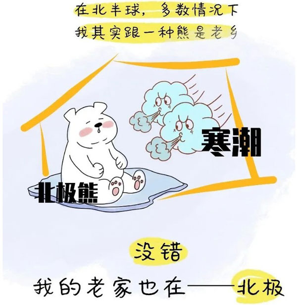

1月11日，@深圳天气 微博发布消息：时隔1066天之后，深圳于2021年1月8日再一次成功入冬。（入冬标准：五天滑动平均气温≤10℃ , 从满足条件的五天中日平均气温≤10℃那天算起）
人们从中感受到的正是这一波波冷空气的威力，而被冻得哆哆嗦嗦的你可能会疑惑，说好的全球变暖呢？
别担心专业解释看不懂，三个身边发生的小故事给你答案。
第一个故事丨要颠覆你所认知的“暖”和“冷”。
在漫长的冬季，冷空气堆积在一起，直到某个时机踏上南下征程，势力强劲的甚至可以一路冲上青藏高原或奔向南海甚至南半球。
首先，全年变暖的“暖”和寒潮等冷事件的“冷”并不是直接对应的概念。
打个比方说，你家冰箱的冷冻室核定温度是-20℃，但因为出了机械故障，现在温度只能降到-18℃。-18℃相对于-20℃，就是“升温”了。
然而，无论冰箱里是零下十几摄氏度，当你打开冰箱门，迎面站在冷冻室前，都会感到一阵寒意逼来。而这就是我们感到寒潮的“冷”。
大概是一个意思：
寒潮的家乡是北极，北极就好比这个大冰箱。从冰箱性能来看，它的冷冻室温度的确“变暖”了；但如果想速冻个水饺，那还是轻松愉快的。
简单来说，全球变暖是全球气候尺度下的趋势。全球平均气温每升高1℃，海平面、环流形式、农耕区作物类型都会发生变化。而寒潮等极端冷事件只是一次天气过程。就好比你站在冰箱门口能感受“寒意”，却无法用肉体感知冷冻室是否出了机械故障一般。
第二个故事丨要从你感受到的冷从哪儿来说起。
前文说了，寒潮的家乡是北极。但这些极其寒冷的空气自己并不会溜达到中低纬度地区。从北极到北半球的中低纬度地区，活跃着许多天气系统。这些天气系统说，“我们不生产冷空气，而是冷空气的搬运工”。

值得一提是，在全球变暖背景下，北极气温升高了；受拉尼娜现象影响，当前太平洋赤道和热带中东部的海水温度也更冷了。也就是说，北极和北半球低纬度地区的温差变小了。
高中地理课本中讲过，空气越冷气压越高，越热则气压越低。温差导致气压差。如果把生产冷空气的北极比作山顶，低纬度地区则是山脚下的谷底。随着温差变小，山顶和谷底的高度差就变小了，这条山路也就变得平缓了。
山路平缓对“冷空气的搬运工”来说，那可是重大利好消息！他们可以爬到更高的山顶（即更偏北的地方，深入极地）进货，也可以把货顺利运抵更远的谷底（即送到纬度更低的区域）。
这就是为什么，今年很多包邮区的人们，见识到了久违的“寒风刺骨”。没关系，冷空气今年也能送货上门哦~~
第三个故事丨我们再次回到北极那个大冰箱。
过去，北极的那些冷空气是比较安分守己的，这是因为有一个叫做“极地涡旋”的系统，把冷空气全部留在北极圈内。只有当极地涡旋出现裂口——也就是我们把冰箱门打开，极地冷空气才能流窜出来。
然而，科学家发现，全球变暖产生的一个恶果是，冰箱的系统故障了！冰箱门不仅频繁被打开，而且更难寻规律！
就好比我们玩游戏时，本来每十分钟电脑会派出一波兵攻击你，系统也会提醒“敌军还有5秒到达战场”。现在，出bug了，电脑的小兵一波连着一波出现，出兵的方向也不固定了！
举个例子：2019年，极涡的裂口朝向北美，加拿大、美国多地就出现“世纪寒潮”；去年年底以来，极涡的裂口转向亚欧大陆，我们也就面临了一波又一波的强冷空气南下……
故事听完了，来看看中国工程院院士丁一汇的解读：
在极地的“冷”与赤道的“暖”之间，存在明显的南北温度梯度。正常情况下，这个温度梯度很大，使得西风带稳定而强大，存在于其中的环流形势（槽和脊）很稳定。但在全球气候系统平衡被打破后，西风带开始不稳定，会出现宽阔的大槽大脊，引导着冷空气顺着大槽长驱南下。
全球变化正是通过北极地区和热带地区的逆向温度变化使南北温度梯度减小，而促使中纬度大槽大脊的发展，这充分表明了冬季的极端寒潮事件是在气候变化影响下发生的。
小编最后唠叨几句
1、全球变暖改变了许多天气系统“固有运转形式”，导致极地的冷空气更容易、更频繁到达原本应该相对温暖的中低纬度地区，因此让更多人感受到了“前所未有”的寒冷。
2、全球变暖的确导致包括北极在内的显著升温。只是较长时间尺度下的升温，对于极地冷空气伴随单次天气过程所带来的寒冷而言，只是“九牛一毛”。
3、全球变暖的后果之一，就是包括极端冷事件在内的极端天气气候事件多发频发。我们今天感受到的冷，恰恰证明全球变暖是真实存在的。
毕竟，我们谁也不想，家里有一台出了故障的冰箱啊！气候行动，刻不容缓！
（手绘：中国气象融媒体视觉创意工场插画师谢晶心）